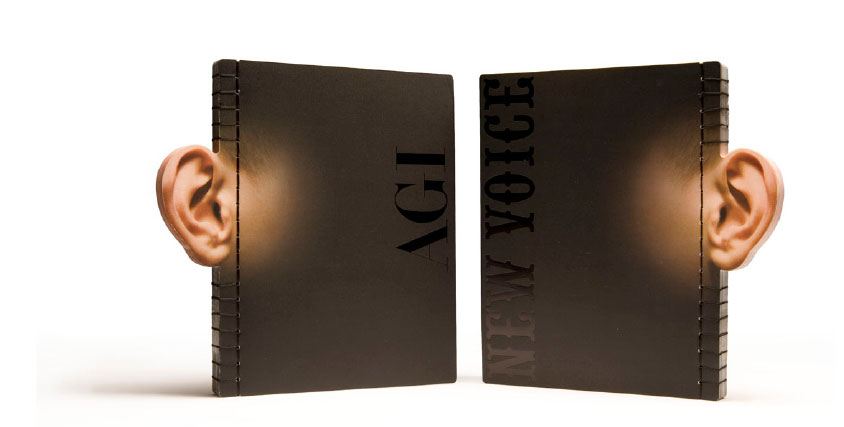

AGI - New Voice
Editor+Design: Jianping He
Staff: Hongbiao Zhao, Tim Fessner
Measures: 21 x 15
Place and date: Berlin, 2006
Publisher: Hesign Publishing Berlin, Germany
ISBN: 3-9810544-5-8
Description: featuring the AGI New members 2004/2005 with their work and reports about AGI Congress in Beijing (2004) and Berlin (2005).
Photo by Phillip Birau (Berlin) 2007
home
back
